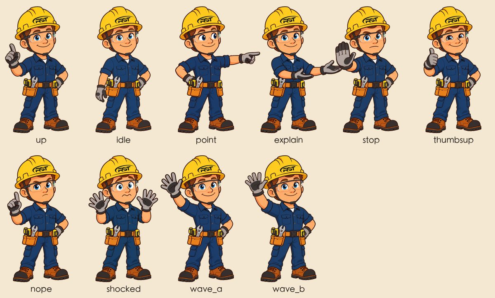

⤢ 点开大图
选题、脚本、三选一定风格
给 3 个选题和发布时机；写约 290 词英文脚本，每个数字注明出处。风格在同一帧上出 3 个方向，你挑一个，写进风格规范。
试试说：给我 3 个选题
CRST 用电安全科普视频制作流程
装上它，在 Claude Code 或 Codex 里说一句「做一支用电安全科普视频」，AI 就会按两支成片总结出来的流程做：选题、脚本、配音、动画、横竖两版成片、字幕和发布文案。每个需要拍板的地方都会停下来问你。
第一支片用了一整天、迭代六版，大部分时间花在下面这些返工上。现在它们都写进了 skill，第二支片 38 分钟就出了第一版。
给 3 个选题和发布时机；写约 290 词英文脚本，每个数字注明出处。风格在同一帧上出 3 个方向，你挑一个，写进风格规范。
试试说：给我 3 个选题

插头、插座、插排、转接头都是 NEMA 标准零件。场景只声明「哪个插头插进哪个孔」，出片前跑 --check，横竖两版都必须通过。外观可换皮肤，适配任何画风。
试试说：画面里要有电暖器插在插排上
MiniMax 逐句合成（默认 Deep_Voice_Man），可先用同一句试 3 到 5 个声音。画面事件写成 at('c1', 'metal')，说到 metal 时触发。配乐和音效用代码合成，口播时自动压低。
试试说：换个更温和的声音试试

吉祥物 Ray 有 10 个姿势，按台词换动作，口型跟配音开合、会眨眼。需要新动作时，用生图后端从母版改图生成，处理后合并进库，旧姿势不受影响。
试试说：Ray 需要一个蹲下检查插座的动作
机器检查接线、二维码和竖屏安全区；再派一个没参与制作的 agent 只看成片挑问题，按严重程度修完再交。
试试说：出片，然后审一遍
横竖两版成片、英文字幕、YouTube 章节时间、各平台发布文案。每个版本写开发日志、存效果截图，提醒你提交存档。
试试说：可以了，帮我出发布文案
只在 macOS 上验证过。不用一项项对照：装完运行环境检查，它会告诉你缺什么、怎么补。
| 需要 | 用途 | 怎么准备 |
|---|---|---|
| Claude Code 或 Codex二选一 | 运行这个 skill | Claude 桌面版的 Code 页或 claude 命令；Codex 应用或 codex 命令。两个都装也行 |
| GitHub 权限必需 | 下载和更新 skill | 请管理员把你的 GitHub 账号加为仓库协作者；本机 gh auth login |
| uv、ffmpeg必需 | 运行脚本、合成音视频 | brew install uv ffmpeg |
| Playwright Chromium必需 | 逐帧渲染画面 | uv run --with playwright playwright install chromium |
| MiniMax API key配音需要 | 英文配音 | 填进配置文件 |
| 一个生图后端生图需要 | 角色动作、背景、道具 | 本机 Codex 或任一生图 API，见下方「生图后端」 |
| Blender＋CRST Pro 模型可选 | 渲染真实产品图 | 没有就用官方产品白底图，脚本会抠图加描边 |
代码放在 GitHub 私有仓库 sundyme/crst-safety-video。第一次装之前，先请管理员把你的 GitHub 账号加为协作者。
在 Claude Code 或 Codex 里粘贴这句话。它会克隆仓库、装给本机的 Claude Code 和 Codex、创建配置文件、检查环境，缺什么会告诉你怎么补。
在终端里执行。第二行会检测本机装了 Claude Code 还是 Codex：仓库只保留一份，另一个工具的 skills 目录里放一个链接，更新一次两边都生效。
用 Claude Code（或两个都用）
只用 Codex
想手动指定：在第二行末尾加 --claude、--codex 或 --both。
不想用 git 时，在仓库的 Releases 页面 下载 crst-safety-video-v1.5.zip（16 MB），解压到 ~/.claude/skills/（Claude Code）或 ~/.codex/skills/（Codex），再创建配置文件、运行环境检查。以 Codex 为例：
所有 key 和选项都在 ~/.config/crst-safety-video/config.env。这个文件只在你的电脑上，不在仓库里，脚本也不会打印 key。用文本编辑器打开：
随时可以运行，逐项打勾，缺的会给出补齐命令（只用 Codex 的把路径里的 .claude 换成 .codex）：
用前两种方式装的，再运行一次安装脚本就会拉取最新版（Claude Code 和 Codex 一起更新）：
~/.codex/config.toml 里打开：
所有生图都走同一个入口 tools/imagegen.py。在配置文件里选后端，流程和提示词都不用改。留空时按表格顺序自动选第一个可用的。
| 后端 | 需要 | 适合 |
|---|---|---|
codex | 本机 Codex CLI：ChatGPT 桌面版自带，或 brew install codex | 默认首选，用 ChatGPT 账号额度，不需要 key。一批图在同一会话里生成，系列图更一致 |
openai | OPENAI_API_KEY；可选 OPENAI_BASE_URL、OPENAI_IMAGE_MODEL | OpenAI 或任何兼容网关的图像接口；带参考图时自动走改图接口 |
gemini | GEMINI_API_KEY；可选 GEMINI_IMAGE_MODEL | Google Gemini 图像模型，改图时人物一致性较好 |
antigravity | 本机 Antigravity 应用开着 | Google AI Pro 额度，单张 2 到 4 分钟 |
command | IMAGEGEN_COMMAND 命令模板 | 接入公司内部或其他任何生图工具 |
长期换：改配置文件里的 IMAGEGEN_BACKEND。临时换：让 Claude 「这批图用 gemini 生成」，或手动加 --backend：
任何能从命令行出图的工具都能接。脚本会把提示词写进临时文件，替换占位符 {out} {prompt_file} {refs} {size} 后执行：
Claude 会用 scripts/new_project.sh 建好工程：复制模板、拷入角色素材、git 初始化并做初始提交。之后每一步都会停下来让你选。
Claude 会自己跑这些命令。想手动检查时，在项目的 代码工程 目录里执行：
新工程自带全部成品帧和动画模块。场景里写 act(时间, '姿势名')，Ray 就会换动作，并自动加上预备、回弹、呼吸、口型和眨眼。
idleuppointexplainstopthumbsupnopeshockedwave_awave_b生图后端以 base.png 为母版，只改胳膊、手和表情，生成闭嘴帧；再分别只改嘴、只改眼睛，生成张嘴帧和眨眼帧。所有新动作都从同一张母版改，避免一代代走样。
tools/process_ray2d.py 抠绿幕、按帽檐角度印上真 logo、切出口型和眨眼补丁。结果合并进位置表，旧姿势不受影响。
片子验收后运行 scripts/ray2d_library.py push <项目>，新姿势进入角色库，总览图自动重画。下一支片就能直接用。
library/ray2d/source/ 只带母版和参考图；各姿势的原始生成帧（约 44 MB）只在 GitHub 仓库里，zip 包不带；只有重新切口型补丁时才需要。
能。skill 用的是两边通用的 SKILL.md 格式，已在 Codex 0.160 上实测能加载。安装方式见「安装」里的「只用 Codex」，在 Codex 里用的区别见「在 Codex 里用的区别」。
能。在配置文件里填一个 OpenAI 兼容接口或 Gemini 的 API key，或者用 command 后端接公司内部的生图工具。见「生图后端」。
选题、脚本、风格方向、画面静帧都能做，只有生成配音需要 key。可以先把画面做出来，拿到 key 后再配音，画面会按新的时间轴自动对齐。
可以，而且每支片都会换。skill 固定的是流程，不是画风。目前做过警示海报和纸片拼贴两种。插头电线的外观用 PK.setSkin() 跟着画风调整，结构和校验不变。
流程本身通用，但素材和规则是按 CRST 和用电安全写的。换品牌要替换模板里的 logo、二维码、产品图，以及 references/product-and-brand.md 里的产品事实表。
没验证过。部分脚本用 zsh 和 macOS 自带的 sips 命令。生图入口 imagegen.py 本身只用 Python 标准库，换成 API 后端理论上可以跨平台。
用官方的白底产品图。tools/sticker_outline.py 会抠图并加上白黑两层贴纸描边，在任何底色上都清楚。第一支片的结尾就是这样做的。
TikTok、Reels、Shorts 的底部约 380 像素会被平台的标题、按钮挡住，skill 规定这里不放重要内容。
key 只放在你电脑上的 ~/.config/crst-safety-video/config.env 或环境变量里，仓库里没有，脚本也不会打印。上传 GitHub 前检查过全部提交历史，没有任何 key。
同时支持 Codex：安装脚本自动装给本机的 Claude Code 和 Codex，仓库只留一份；补充在 Codex 里运行的注意事项。
生图后端可换：本机 Codex、OpenAI 兼容 API、Gemini API、Antigravity、自定义命令；key 统一放配置文件；新增安装脚本和环境检查。
新增 Ray 2D 角色库（10 个姿势，含口型和眨眼），角色动画拆成独立模块；新增库同步和打包脚本；帽徽按帽檐角度贴正。
PlugKit 新增三转二转接头；试过 3D 角色实时渲染，被否后改为 2D 动作帧做法。
改成「流程固定、画风不固定」，每支片先出三个风格方向；PlugKit 支持换皮肤；新增 Codex 命令行生图流程。
从第一支片的六版迭代整理出工程模板、PlugKit 接线库、配音时间轴、产品渲染和验收清单。